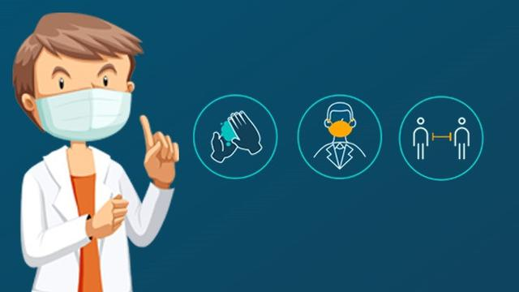

Pencegahan COVID-19

Penyakit Covid-19 adalah penyakit yang disebabkan oleh Coronavirus jenis baru dengan gejala klinis demam, batuk, pilek, letih, lesu, sakit tenggorokan, dan sesak napas. Masyarakat perlu mengetahui cara mencegah penularan virus tersebut agar tidak mewabah di Indonesia.
Coronavirus menular melalui droplets atau tetesan cairan yang berasal dari batuk dan bersin, kontak pribadi seperti menyentuh dan berjabat tangan, menyentuh benda atau permukaan yang terdapat virus kemudian menyentuh mulut, hidung, atau mata sebelum mencuci tangan,
Ada lima cara penting dalam mencegah penularan Covid-19 antara lain pertama sering cuci tangan pakai sabun, kedua, bekerja, belajar, beribadah di rumah, ketiga jaga jarak dan hindari kerumunan, keempat tidak berjabat tangan, kelima pakai masker bila sakit atau harus berada di tempat umum.
Di samping itu masyarakat perlu meningkatkan imunitas tubuh dengan mengonsumsi gizi seimbang, tidak merokok, minum suplemen vitamin jika diperlukan, berolahraga, istirahat cukup, dan mengendalikan penyakit penyerta seperti diabetes, hipertensi, dan kanker.
Tak hanya itu, etika batuk perlu dilakukan agar tidak menulari orang lain. Etika tersebut dilakukan dengan menggunakan masker bagi orang sakit, tutup mulut dan hidung dengan lengan atas bagian dalam, gunakan tisu dan buang di tempat sampah tertutup, setelah itu segar cuci tangan pakai sabun dengan air mengalir.
Pencegahan COVID-19
1.Cuci tangan Anda secara rutin. Gunakan sabun dan air, atau cairan pembersih tangan berbahan alkohol.
2.Selalu jaga jarak aman dengan orang yang batuk atau bersin.
3.Kenakan masker jika pembatasan fisik tidak dimungkinkan.
4.Jangan sentuh mata, hidung, atau mulut Anda.
5.Saat batuk atau bersin, tutup mulut dan hidung Anda dengan lengan atau tisu.
6.Jangan keluar rumah jika merasa tidak enak badan.
7.Jika demam, batuk, atau kesulitan bernapas, segera cari bantuan medis.